Document 01
정책제안서
문제 인식 → 정책 설계 → 실행 계획 → 기대효과·벤치마킹·소수의견까지 4장. 원문 문장을 그대로 옮긴 공개용 사본으로, 김유빈을 제외한 팀원 성명만 가렸습니다.
Archive — 활동 기록
걸어온 시간의 물성(物性) — 현장은 기록으로 남을 때 경력이 됩니다.
Highlight — 2026 청년의날
청와대에서 열린 대통령 주관 2026 청년의날 기념행사에 청년 대표로 초청되어 참석한 기록입니다.
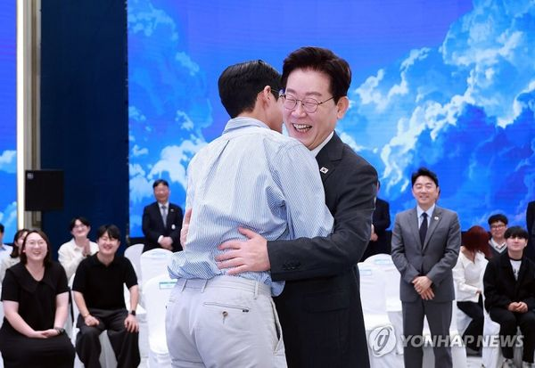


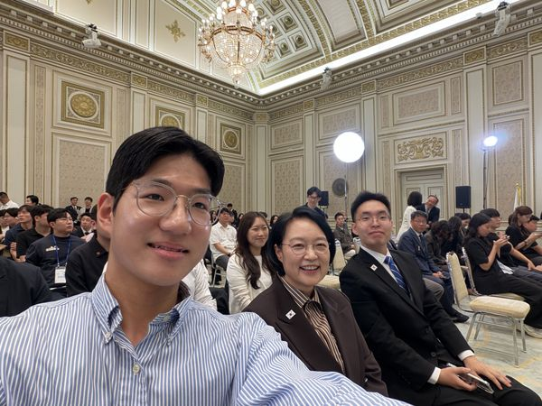
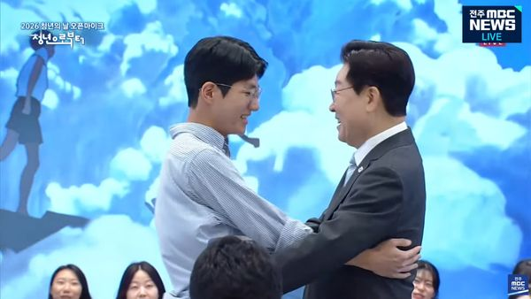


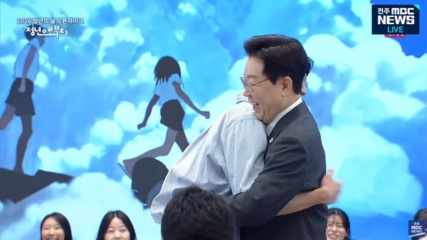
보도사진 ⓒ연합뉴스 · 방송 화면 ⓒ전주MBC · 그 외 직접 촬영 · 사진을 누르면 크게 볼 수 있습니다
공개 기록 — (사)한국부동산마케팅협회 〈김유빈 인턴, 청와대 2026년 청년의 날 기념식 참석〉 2026. 9. 21 · 〈제9기 서초청년네트워크 부위원장 위촉〉 2026. 9. 10
Case — 2026. 9. 29 · aT센터 · 국민통합위원회
한 시간의 집중이, 하나의 정책 제안이 되기까지.
현장의 토론을 실행 가능한 문서와 발표로 옮긴 과정입니다. 국민통합위원회가 주최·주관한 〈2026 세대·젠더 분야 현장형 국민대화 국민 대토론회〉 자산 분야 토론과제 3에서, 청년 미래팀이 함께 문제를 정의했고 김유빈이 정책 구조 설계와 제안서·발표자료 제작, 현장 발표를 맡았습니다.
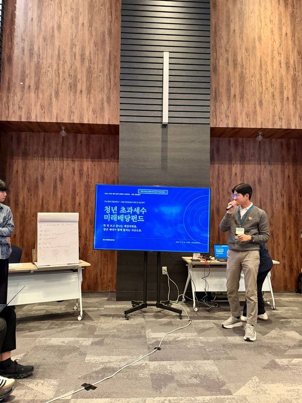
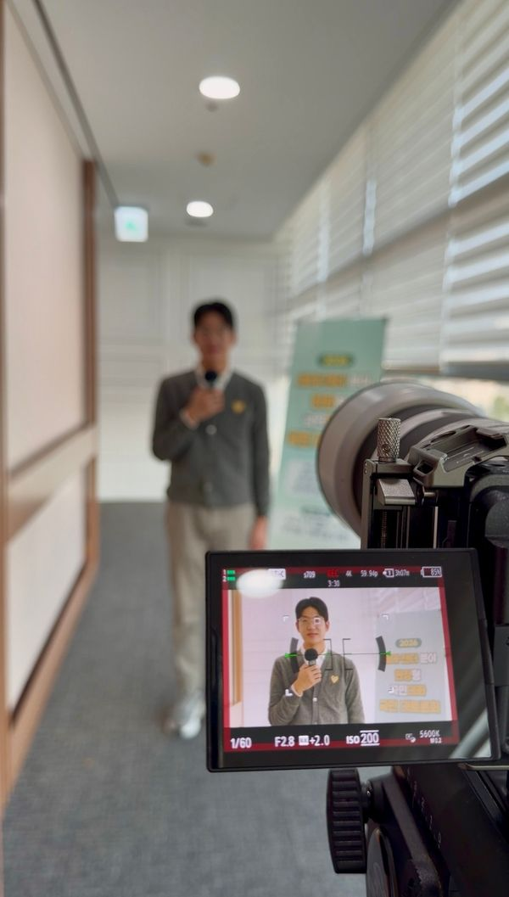
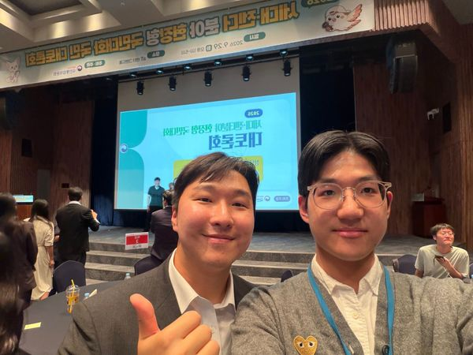
문제 — 정책 제안서 1장
제안서 인용 근거: 고령층–청년층 자산격차 3.9배(2024) · ‘쉬었음’ 2030세대 65.1만 명(2026.7) — 대통령실·관계부처 합동 「청년 성장단계별 종합투자 추진전략」(2026.8.28)
해법 — 청년 초과세수 미래배당펀드
Document 01
문제 인식 → 정책 설계 → 실행 계획 → 기대효과·벤치마킹·소수의견까지 4장. 원문 문장을 그대로 옮긴 공개용 사본으로, 김유빈을 제외한 팀원 성명만 가렸습니다.
Document 02
현장 발표에 쓴 8장. 문제 인식, 복리의 힘(연 5% 가정 예시), 정책 제안, 작동 방식, 해외 선례, 우려와 답, 맺음 순서입니다.
Process — 하네스 엔지니어링 관점의 실무 사례
현장 토론 뒤 약 한 시간의 집중 작업(본인 기준)으로 제안서와 발표자료를 완성했습니다. 속도는 AI가 냈지만, 무엇을 맡기고 어디서 멈춰 검토할지는 사람이 정했습니다. 자동화 파이프라인을 만든 사례가 아니라, 모델에 주는 맥락·제약·출력 형식과 사람의 승인 지점을 설계한 작업 방식의 사례입니다.
사람 · 팀
테이블 토론에서 나온 현장 견해를 정책 목적과 제약, 가설로 나눴습니다. 근거 확인은 팀의 리서처·팩트체커 4인이 함께 맡았습니다.
사람의 판단 · AI 보조
주최 측 제안서 양식의 작성 순서, 검토할 근거 자료, 산출물 형식(제안서·발표 8장), 품질 조건(출처 표기, 확정되지 않은 수치는 쓰지 않기)을 먼저 정했습니다.
AI 가속 · 사람 편집
제안서 구조화와 슬라이드 초안은 AI와 함께 빠르게 만들고, 초안을 검토·수정해 확정했습니다. 제안서 원본은 양식을 코드로 조판한 파일입니다(원본 파일 정보 기준).
사람
세계잉여금 사용 순서, 원금 보존과 손실 연도의 배당 유보, ‘가중치는 추계 후 확정’, ‘복리 예시는 가정’ 같은 단서를 원문과 대조해 남긴 뒤 현장에서 발표했습니다.
이 작업 방식을 강의로 다룹니다.
사진 직접 촬영 · 문서는 청년 미래팀 제출본(공개용 사본) · 사진을 누르면 크게 볼 수 있습니다
Archive — 활동 기록
SSAFY 13기 교육 현장, 연합뉴스TV 인터뷰(강남1인가구센터), 공식 프로필 기록입니다.
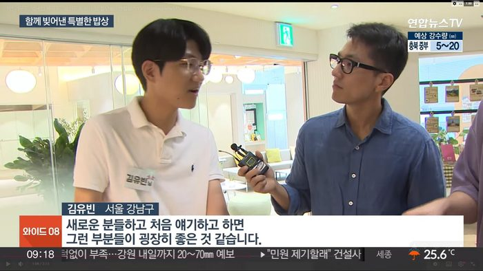

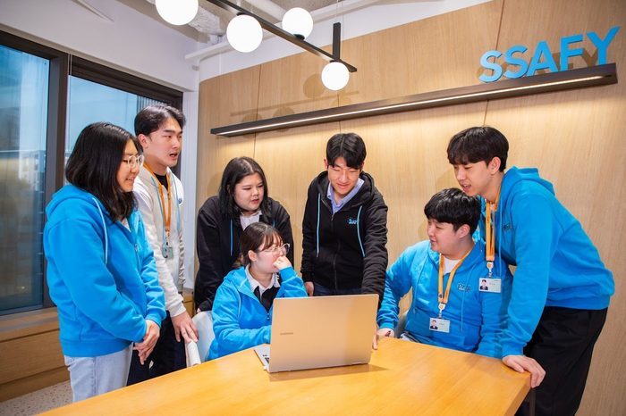
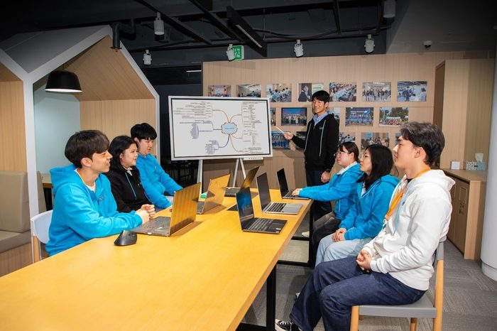
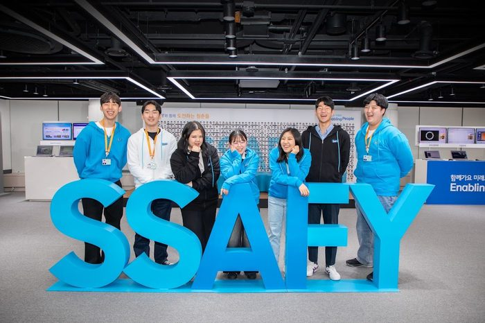
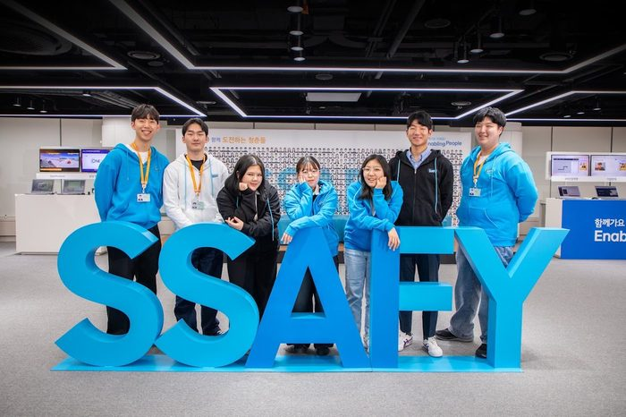
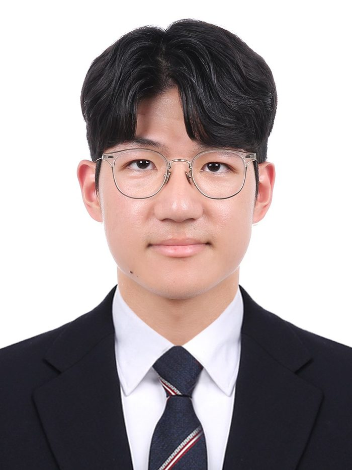
Credentials — 자격 · 교육 · 상훈
교육과 훈련의 현장에서 받은 상장과 기록 — 종이로 남은 증명입니다.
Military Honors — 원본과 보정 참고
원본은 실제 수상자료이며, AI 보정본은 훼손된 문서의 가독성을 돕는 시각 참고 이미지입니다. 내용 확인은 원본을 기준으로 합니다. 공개용 사본에서는 본인 외 수상자 성명을 가렸습니다.
신병 제23-15기 교육과정에서 분대원 12명이 함께 받은 분대 단위 상장입니다.
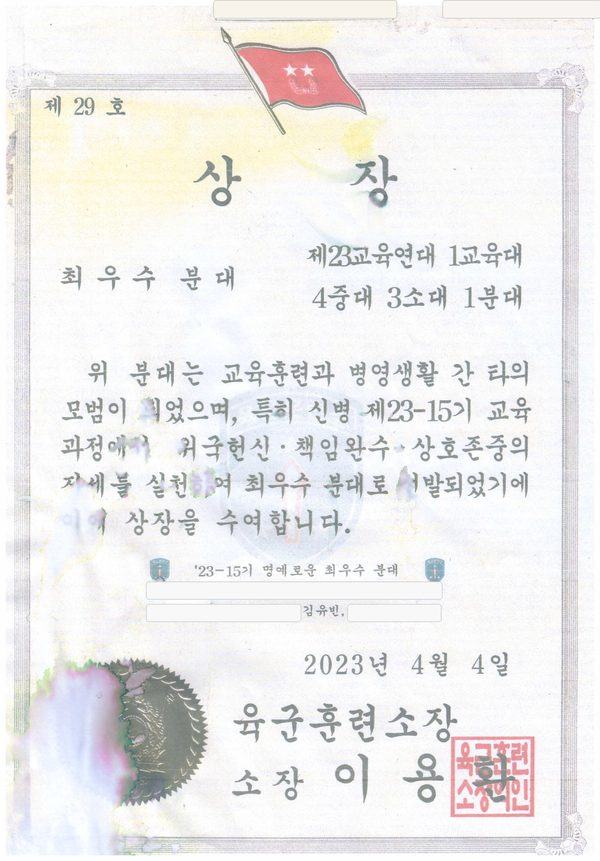
원본은 물 얼룩과 탈색이 있는 스캔본입니다. AI 보정본은 일부 분대원 성명 글자가 원본과 다르게 생성되어, 원본과 같은 줄을 가렸습니다.
軍·官·學이 주관한 성취도평가에서 팀 Home_Ally로 입상했습니다.
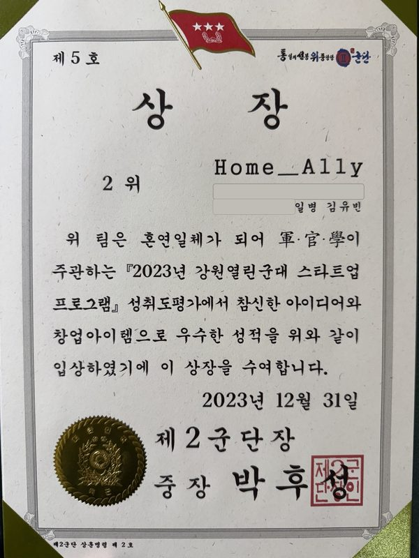
원본은 실물을 촬영한 사진입니다. AI 보정본은 상단 부대 구호의 글자가 원본과 다르게 생성되었습니다.
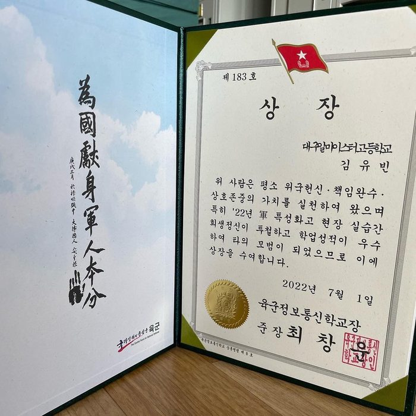
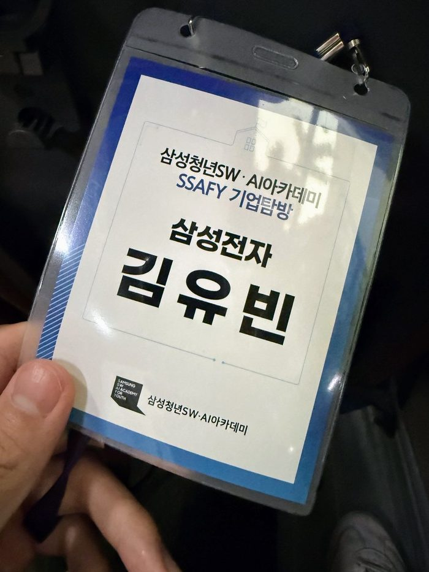
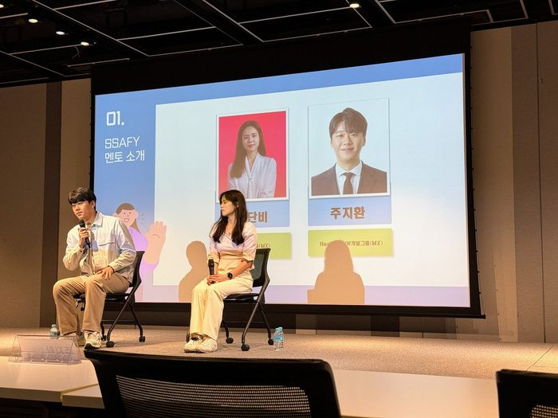